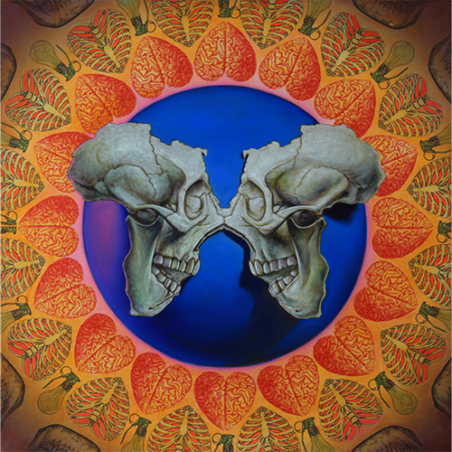
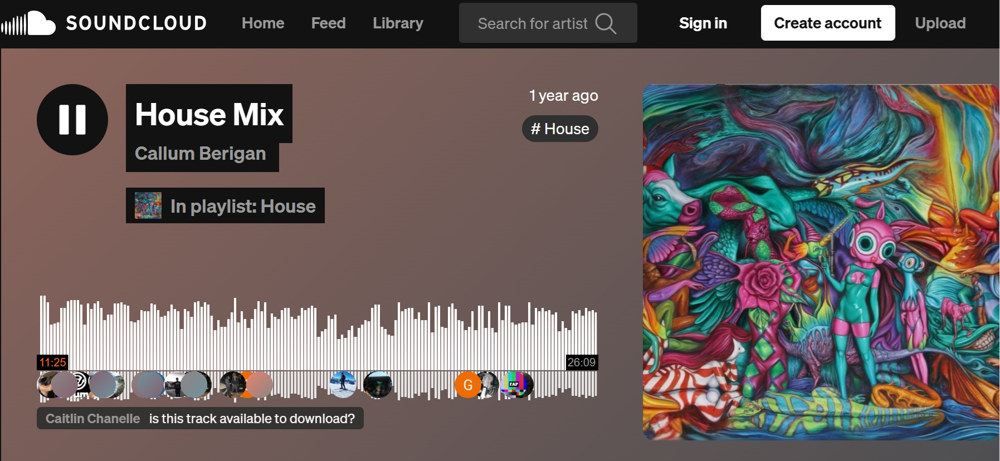
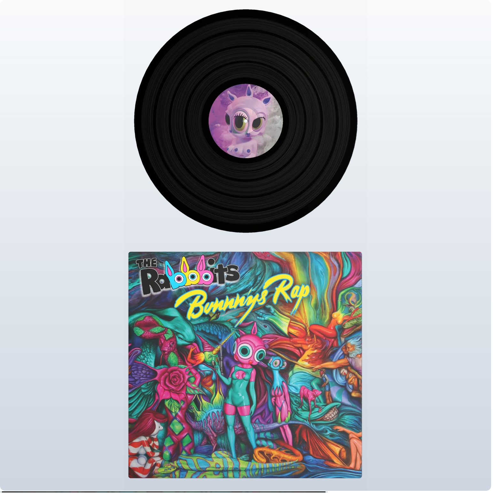

Exhibitions
Delusionville, Allouche Gallery, New York, New York, US, October 11–November 25, 2018.
Notes
This work appears in the online PDF catalogue for Ron English: Delusionville (Allouche Gallery, 2018), available here, accessed April 12, 2026.
It also appears in exhibition photographs published in Houda Lazrak, “Street Art NYC at Main Street at the Museum Mohamed VI with C215, Case Maclaim, Tilt, Ron English, Miss Van and Simo Mouhim,” Street Art NYC, June 8, 2015, available here, accessed April 16, 2026.
This image appears as the cover artwork for Callum Berigan’s SoundCloud track House Mix, published January 31, 2025, available here, accessed April 16, 2026.
It also appears on VeVe’s digital collectible page for Ron English’s Record #7 - Bunnny’s Rap - Original, where it is listed as a Common, First Edition digital collectible in the Delusionville Record S7 series, available here, accessed April 16, 2026.
Ancillary Documentation



